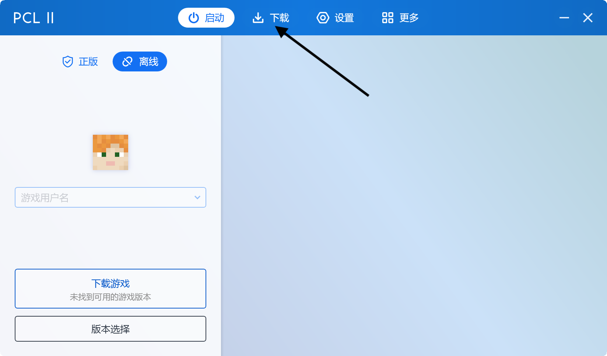
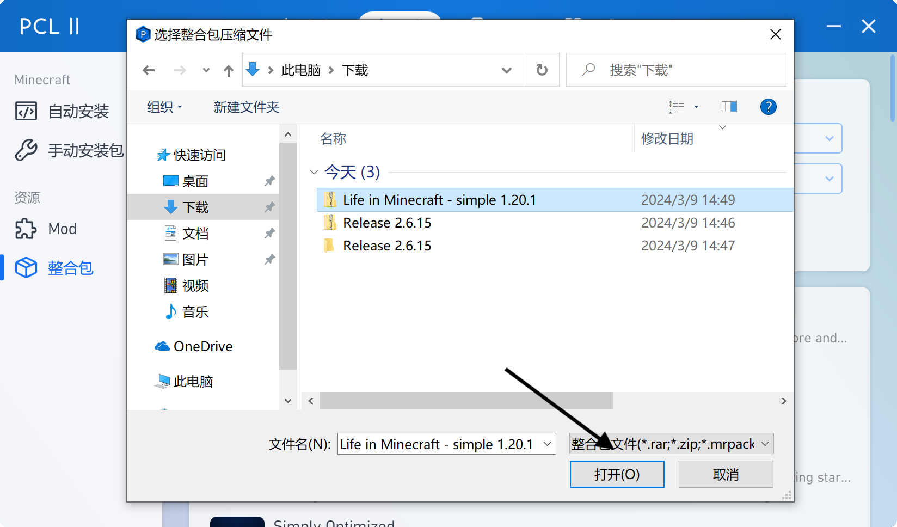
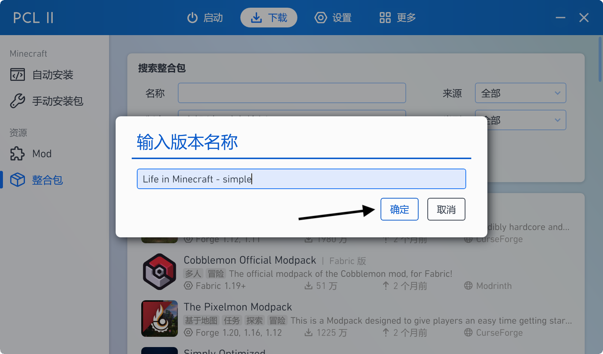
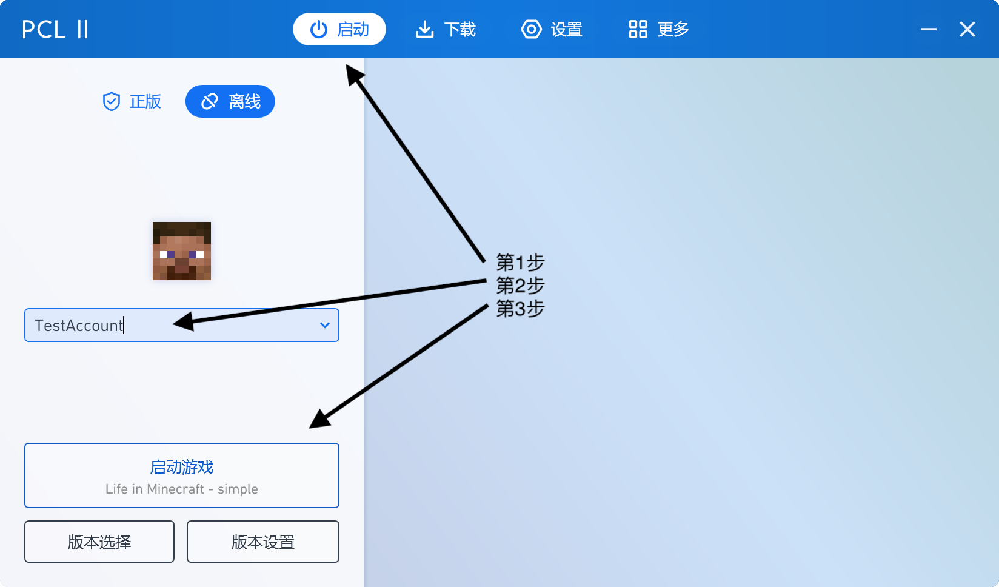

安装 Adventure Extra Minecraft (Life in Minecraft - simple) 整合包
阅读前提示: 本文中所有 浅蓝色 的文字均是可以点击的链接。
本文中提到的所有链接均是官方网址。
Adventure Extra Minecraft 就是新版本的 Life in Minecraft。请您下载时选择 Adventure Extra Minecraft。
本文中提到的所有链接均是官方网址。
Adventure Extra Minecraft 就是新版本的 Life in Minecraft。请您下载时选择 Adventure Extra Minecraft。
选择启动器
如果你是 macOS 或者 Linux 用户: 你可以选择 HMCL 。
如果你是 Windows 用户: 你仍然可以选择 HMCL , 但你也可以选择 PCL2 以及 BakaXL 。本文将会介绍如何在 HMCL 以及 PCL2 中安装整合包。
安装 Java
在 macOS / Linux 上, 你可能需要手动安装 Java: 访问 此链接 来下载 Java。这个链接包含主流系统的 Java 安装包。
对于 macOS: 选择 macOS > Java 17 > x64 DMG Installer。如果你不是 Intel 芯片的 Mac, 选择 ARM64 DMG Installer。( ARM64, x64 )
对于 Windows: 如果你选择 PCL2 或 BakaXL 启动器, 那么你无需手动安装 Java, 启动器会自动下载并安装。如果你使用 HMCL, 你可以使用以下 链接 来在 Windows 上手动安装 Java。
PCL2: 安装整合包
1. 使用以下 链接 来下载 Life in Minecraft - simple 整合包。
2. 打开 PCL2, 点击上方的“下载”。

左键单击“下载”。
3. 依次点击左侧的“整合包”以及右侧的“安装已有整合包”。
左键分别单击“整合包”、“安装已有整合包”。
4. 选取第1步下载的整合包文件。

左键单击“打开(O)”。
5. 点击“确定”。

左键单击“确定”。
6. 等待安装。
等待安装。
7. 点击上方的“启动”, 输入用户名并点击“启动游戏”。

左键单击“启动”; 左键单击文本框并输入用户名; 左键单击“启动游戏”。
HMCL: 安装整合包
1. 使用以下 链接 来下载 Life in Minecraft - simple 整合包。
2. 打开 HMCL, 点击左侧的下载。
左键单击“下载”。
3. 依次点击左侧的“整合包”以及右侧的“安装整合包”。
左键分别单击“整合包”、“安装整合包”。
4. 点击“导入本地整合包文件”。
左键单击“导入本地整合包文件”。
5. 选取第1步下载的整合包文件。

左键单击“Open”。
6. 点击“安装”。
左键单击“安装”。
7. 等待安装。
等待安装。
8. 单击确定。
左键单击“确定”。
9. 多次点击左上角的箭头以回到主界面, (添加账户后)点击“启动游戏”。
左键多次点击左上角箭头; 左键单击“启动游戏”。
享受整合包!
至此, 你已经安装完毕了 Life in Minecraft - simple 整合包。你可以立即启动游戏以体验拥有着丰富内容的游戏, 有大量的模组等待你探索: Create、Farmer's Delight、Supplementaries、Ad! Astra等。
希望你享受这个整合包。